Maya PLE Character Model Tutorial Part 2
Rigging the model
Time to add some bones. Unlike the UT2003 models, this one will have a minimal rig, and that brings up a point about bone names in character skeletons.
As far as i know, the UT2003 characters were modeled and rigged in 3DS Max, which provides a pre-fabbed skeletal rig known as Biped as part of Character Studio. The bones in Biped are already named, and the game engine references these bone names in a number of ways, either directly or through assigned aliases.
But – and this is an important caveat for custom model builders – the Max bone names are not absolute requirements. Bones can be be named as suits the modeler/animator, as long as the game engine is properly informed about what bone names are actually used. That being said, it would obviously simplify the process of creating a custom character to use the Biped rig and its bone names, but for any except two-legged humanoids, Biped is inappropriate.
For this tutorial, custom bone names will be used, both to differentiate between Biped bones and the Maya PLE character's, and so the process of identifying custom bone names to the engine when necessary can be illustrated. Maya PLE has no pre-assembled rigs, so one has to be constructed.
18. Switch to the Animation editor. Select the IK Joint Tool from the Shelf, or in the main menu use Skeleton>Joint Tool. For this tutorial we're using the default tool options for the Joint Tool, so opening the OPTIONS dialog isn't necessary. Make sure Snap to Grids is still enabled.
Switch the workspace to an orthographic Front view.
19. Place the tool pointer at the workspace origin, click, move the pointer to Y=1, click, then hit Enter. This creates the first 2 joints and one bone. Press g (lower case) to get the Joint Tool back, then click again at the origin, then click at Y= -0.5. Hit Enter, creating a third joint. (see "NOTE" after step 22 for explanation of why values in the channel box change)
20. Open Outliner (main menu Window>Outliner) and expand the hierarchy (click the + sign) at joint1. You should see joint2 and joint3 in the tree. Rename joint1 to RootBone. This bone is the top of the skeleton hierarchy for the model.
HINTS: Use Outliner for selecting joints and bones in the rigging process; it's much easier than trying to pick them out in the viewport. For better joint & bone visibility, use Display>Joint Size> to enlarge them in the workspaces.
21. Rename joint2 to Spine01. Rename joint3 to Pelvis. These two joints will gain bones later.
You may note that Maya PLE labels the skeleton parts as joints, and we're renaming them as bones. In Maya PLE, bones are always associated with a joint, so we're essentially renaming the pair of objects. Joints can exist without bones, however, so some joints (such as those at the ends of skeletal hierarchies) may not be renamed.
Time for a progress check. Compare FIG 5 with what you have in your scene.
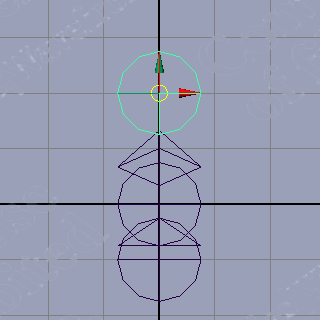
FIG 5. RootBone, Spine01 and Pelvis |
22. Use the IK Joint Tool to create a joint at the top of R_thigh, X= -3, Y= -0.5, then at the knee Y= [-11], then at the bottom of the calf Y= [-12].
NOTE: The bracketed values indicate what shows in the Channel Box during this process – they are relative to the parent joint of the joint being created, not to world space. To make things a bit more confusing, the Y value can become an X value once the LMB is release to form the joint, and can change sign as well. This is normal.
23. Select the joint at the top of R_thigh and rename it R_thighBone. Select the joint at the top of R_calf and rename it R_calfBone.
24. Duplicate R_thighBone. As a child of R_thighBone, R_calfBone will also be duplicated, preserving the hierarchy in the duplicate. Rename the duplicate of R_thighBone to L_thighBone, and its child to L_calfBone.
25. Select (in this order) R_thighBone, then the joint named Pelvis. In the main menu use Skeleton>Connect Joint>OPTIONS, make sure the Parent Joint radio button is enabled in the dialog that opens, and click Apply. A new bone now connects R_thighBone and the Pelvis joint. This is the first half of a complete Pelvis bone.
26. Select (in this order) L_thighBone, then Pelvis, and in the Connect Joint Options dialog, once again click Apply.
This completes the lower-body hierarchy for this simplified skeleton and model. Expand the hierarchy tree in Outliner to see the parent/child relationships of the various bones, noting that RootBone is now at the top of the tree. Check FIG 6 to confirm the model's progress so far.
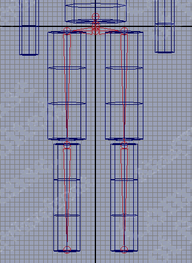
FIG 6. The skeleton's lower half |
27. To build the spine, select the IK Joint Tool, click on the joint Spine01, then place 3 more joints above it at [6], [6] and [4]. The last of the 3 should be placed at the top of the torso cylinder (FIG 7). Hit Enter to create the hierarchy.
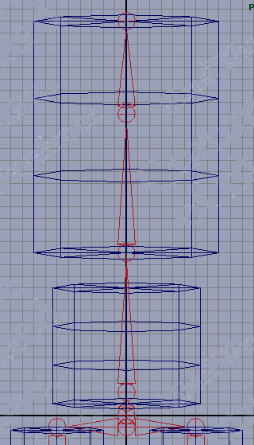
FIG 7. Positioning the spine bones |
28. Rename the spine joints in Outliner, moving up from Spine01, as Spine02, Spine03, and Clavicle. Clavicle has no bone yet.
29. Arm bones next. As with the leg bones, we'll create a two-bone hierarchy first, then connect it to the Clavicle joint.
Starting at the top center of cylinder R_arm, use the IK Joint Tool to create joints at the shoulder, elbow, and wrist, making sure the joints are aligned vertically, then hit Enter to set the hierarchy. Rename the joints created to R_armBone and R_4armBone – which is which should be obvious. The end joint need not be renamed.
When finished, select R_armBone and confirm that it's positioned at X= -7.0, Y=17.0
30. Duplicate R_armBone and move it to x=7.0, then rename the duplicate hierarchy appropriately for the left arm.
NOTE: Joint names in different hierarchies can be identical if the parent joints have different names, so for clarity, renaming all duplicated joints to avoid duplicate names is recommended.
31. Next select (in order) R_armBone and Clavicle, then connect them in the same manner as with the leg bones and Pelvis. Repeat the connect process with L_armBone and Clavicle. (FIG 8)
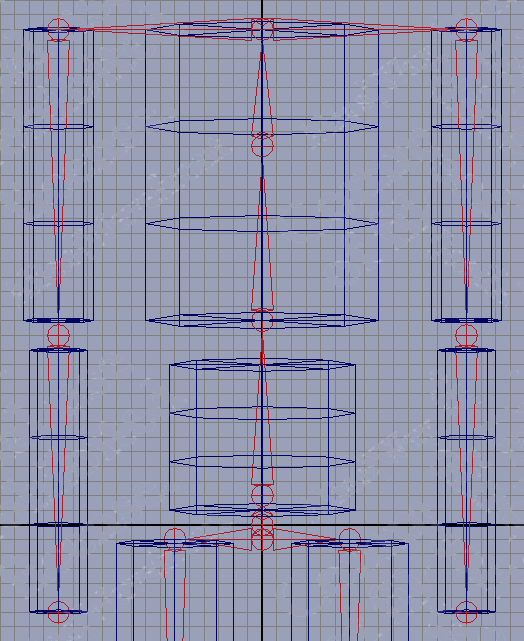
FIG 8. The upper body bones |
32. To complete the upper body hierarchy, it's now necessary to create and connect a neck joint and bone. Create a joint just above Clavicle, at Y=17.5, and another at [5], then hit Enter. Rename the resulting bone as Neck.
33. Select Neck, then Clavicle, and connect as before.
The skeleton is now complete. Check the layout in the viewports and the hierarchy in Outliner and confirm that they look like FIg 9.
![[MCMT-09-AllBones]](images/mcmt-09-allbones.gif) FIG 9. Front view of the complete skeleton |
34. The X and Y positions of the joints are set, but some Z-axis tweaks are needed to align the rig with the polymesh "skin."
Switch to ortho Side view, select the joints one-by-one, and use the Move tool + Insert to adjust the joints in Z so they align with the centers of the polymesh limbs and torso (FIG 10). Be sure to use Insert to have the joints move independently of the skeletal hierarchy.
35. The spine is a special case. Maya PLE's IK solvers limit the extent a joint can flex, so for spine-like flexibility, the joint/bone system needs at least a couple of segments, and they have to be set up to flex in opposite directions. FIG 10 illustrates appropriate positioning for the spine segments – copy the shallow "zig-zag" orientation shown. The reason for this will become apparent when IK Handles are applied to the rig.
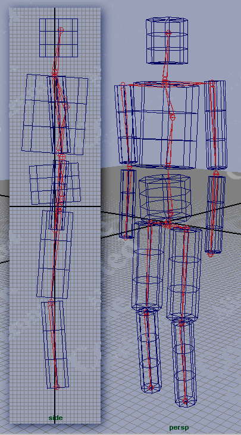
FIG 10. Two views of the final skeleton |
Keep in mind that this is a very rudimentary skeletal rig, suitable for this tutorial but not for a fully useable character. Study the UT2003 character rigs in the Animation browser, and other skeletal animation examples you can search out in the Maya documentation and on the web, for examples of fully-developed bone rigs.
36. To preserve this orientation of the skeleton, select RootBone. In the Command Line field, enter the MEL command string select -hi and hit Enter. select -hi tells Maya PLE to select all objects in the hierarchy below RootBone, i.e., all the joints & bones. MEL (Maya Embedded Language) commands are case-sensitive, so type it exactly.
Use Skeleton>Set Preferred Angle in the main menu. This "records" the orientation of all the selected joints so they can be reset later with the Skeleton>Assume Preferred Angle menu item.
Adding IK Handles
A skeletal hierarchy by itself is just a bag o' bones: unless you're planning to use only FK to animate it (not the usual method), IK Handles must be added to connect certain joint/bone pairs. If you're not too clear on the difference between Inverse Kinematic (IK) and Forward Kinematics (FK), no worries, for this tute a complete understanding isn't necessary. More info at  Inverse kinematic animation
Inverse kinematic animation
37. First the workspace has to be cleared of stuff not needed for now. In the main menu use Display>Hide>Geometry>Polygon Surfaces to hide the polymesh cylinders so joints can be easily selected with the pointer. Switch to a perspective viewport.
38. Start with the legs. Select the IK Handle tool, click on joint'n' ('n' is a number) at the end of the right leg joint/bone chain, then click on joint R_thighBone. The leg bones will change color, selection handles appear, and the two joints are connected by a line, the handle vector.
39. In like fashion, create an IK Handle connecting joint'n' at the end of the left leg bone and L_thighBone.
40. Create the arm bone IK Handles, connecting joint'n' at the end of each chain to its respective shoulder joint. Then use Edit>Select All by Type>IK Handles and compare your rig to FIG 11.
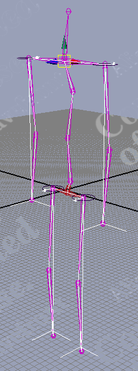
FIG 11. IK handles added to legs and arms |
Save your file now. Time to play with the IK rig a bit before proceeding, and progress so far should be saved in case reverting to this point is necessary.
Select an IK handle and move it around, testing the range of motion it offers. Note that the joint the IK handle controls cannot be "hyperextended" – flexed past a point where the joint/bone chain aligns with the handle vector line. While this is fine for joints like elbows and knees, it complicates structures like the spine, which has to flex with much greater freedom.
When you're ready to proceed, select the entire skeleton as described in 36. above, then use Skeleton>Assume Preferred Angle to get your rig back in the "default" position. If this fails for some reason (it can occasionally fail with more complex rigs), just reopen the file without saving changes.
41. Connect Spine01 and Spine03 with an IK Handle.
42. Connect Spine02 and Clavicle with an IK Handle. The character's IK controls are now rigged.
43. Rename the IK handles according to the bones they control – see FIG 12.
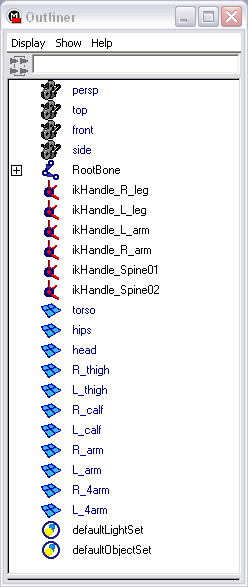
FIG 12. IK Handle names |
Again take a few minutes to "exercise" the model using the IK handles. Gain some familiarity with the motion capabilities and limits, particularly the spine, which often requires manipulating more than one handle simultaneously to attain a desired position.
Once more it needs to be stated that this tutorial uses a VERY rudimentary model, with simple geometry and a simple IK rig (skeleton + IK handles). For a more complex model, the rigging is quite a bit more elaborate, as a review of the UT2003 models' skeletons will reveal.
NOTE: There may also be significant differences in how Max & Maya deal with Inverse Kinematics that will result in IK rigs that differ in detail, so using Maya PLE to "copy" a skeleton built in Max may not be successful without adaptation.
Binding the Skin
This process "attaches" the polymesh objects of the character model to the IK rig so that the rig controls the motion of the polymesh, which is the only visible part of the model in-game.
44. Use Display>Show>Show Geometry>Polygon Surfaces to make the model's meshes visible again. Use Display>Hide>Hide Kinematics>All to hide the IK rig for now while some more modeling is done.
45. Looking at Outliner, the scene now has 11 polymesh objects listed. These have to be made into a single polymesh for binding as a skin. Switch to the Modeling editor, then select all the cylinders comprising the model.
46. Use Polygons>Combine in the main menu. Outliner now shows a single polymesh object (polySurface'n' ). Rename this object SkinMesh.
Note that in Outliner, things are getting complicated, as it still displays the names of the previously separate cylinder objects (FIG 13). These are part of the "history" of the polygon mesh we've been working with. They're not needed, so delete them by selecting SkinMesh and using Edit>Delete by Type>History in the main menu.
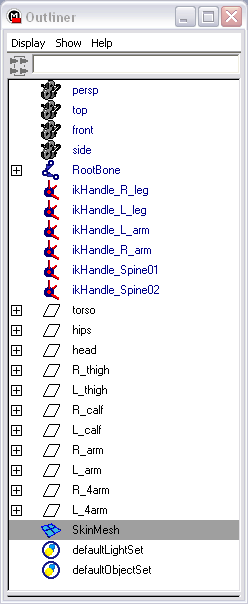
FIG 13. The combined polymesh's history in Outliner |
47. Switch back to the Animation editor and make the IK rig visible again with Display>Show>Show Kinematics>All.
48. In Outliner, select SkinMesh, then Ctrl+select RootBone to add it to the selection.
49. In the main menu, use Skin>Bind Skins>Smooth Bind>OPTIONS to open the Smooth Bind Options dialog. Enter the settings shown in FIG 14 and click Bind Skin. SkinMesh will change color, indicating it is now bound to the IK rig.
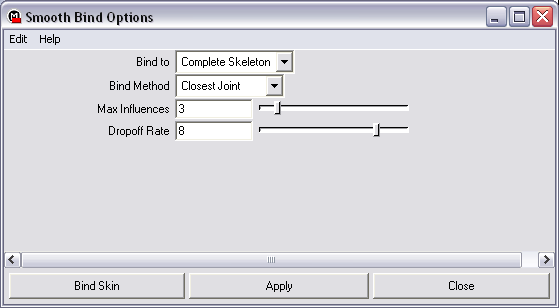
FIG 14. The Smooth Bind options to use |
50. Select an IK handle and move it – SkinMesh moves with it. If things look wrong in some places, it's OK, it'll be fixed in a moment.
51. After binding, the position of the IK rig + skin is "recorded" as the Bind Pose. If while moving the model around you manage to "lock" it into a distorted pose that can't be undone (it can happen with extreme poses), select any part of the skeleton and use Skin>Go to Bind Pose to recover.
You may note that some parts of SkinMesh move inappropriately, like parts of the torso moving with the arms. This is due to the binding method used (Closest Joint), and can be fixed in a number of ways. The usual method is to bind the skin in a different pose where the bones and skin sections are more widely separated. This is one reason the reference pose for many models is the "T-bone" – arms-straight-out-from-the-shoulders.
52. Select SkinMesh in Outliner and use Skin>Detach Skin>OPTIONS to open the dialog. Choose the Delete History option, then click Detach. SkinMesh is no longer bound to the IK rig.
53. Hide the Kinematics (IK rig) as before, and switch to the Modeling editor. With SkinMesh selected, use Edit Polygons>Separate. In Outliner, SkinMesh changes to a Group item (different icon), and the individual cylinders of the model are listed as group members (with new names, unfortunately, but that's not critical at this point).
54. Using an ortho front viewport, select the 2 cylinders of the right arm, then select the Rotate Tool. The pivot is at the origin, and will have to be moved to the "shoulder" position, so use Insert and move it to the top center of the right upper arm cylinder (FIG 15). Make sure Snap to Grids is enabled to insure accurate positioning of the pivot.
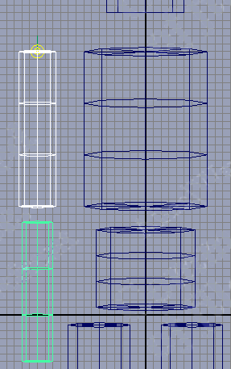
FIG 15. Place the pivot at the top center of the "shoulder" |
55. Hit Insert again to disable "move pivot" mode, then rotate the two selected cylinders -90 degrees on the Z axis so they point straight out from the torso (FIG 16). This can be done with the manipulator (hard to get exactly 90 degrees), or by entering Rotate Z= -90 in the Channel Box.
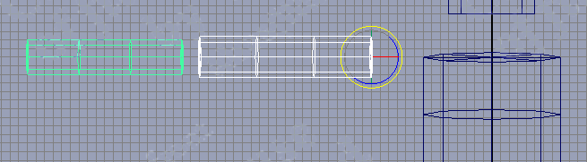
FIG 16. Rotating the arm |
56. To complete the "T-bone" pose, re-align the left arm cylinders in like fashion. The rotation for these will be Rotate Z=90.
57. Select All and use Polygons>Combine, then use Edit>Delete by Type>History to clear the unnecessary items from Outliner. Rename the combined polymesh as SkinMesh.
58. Show the IK rig. Make sure Snap to Grids is enabled. Select ikHandle_R_arm and move the arm bones so they line up with the center of the right arm cylinders (FIG 17). Align the left arm bones to the left arm mesh in similar fashion. Switch to ortho Top view to confirm the bone alignment along the centers of the cylinders (FIG 17).
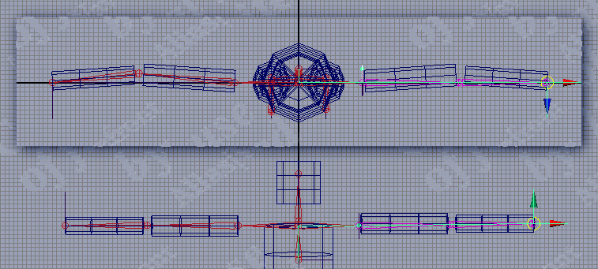
FIG 17. Realigning the skeleton using the IK handles |
59. Switch to the Animation editor. In Outliner, select SkinMesh, Ctrl-select RootBone, and use Skin>Bind Skin>Smooth Bind to once again attach the skin to the IK rig. The options are preserved from the last Smooth Bind, so the dialog isn't needed this time.
Move the IK handles around – the previous inappropriate skin moves are gone. Near the joints, the skin deformation influenced by the joints is obvious, but that's normal (and desirable for models where the entire body is a single continuous mesh).
At this point it's possible to proceed with animating the character, but it's also a good time to use one of Maya's coolest character modeling features (imho, of course), the Paint Skin Weights Tool (PSWT).
"Skin weights" refers to the amount of influence any joint/bone has over any single vertex in the polygon mesh bound to a skeleton. Some apps use numerical data entry to fine tune this value, and in Maya PLE that's also an option, but I find it tedious and inefficient. The Paint Skin Weights tool does the same task with a "paint brush" applied directly to the model.
60. Switch the viewport Shading from Wireframe to Smooth Shade All. Use Display>Grid to toggle the viewport grid off. Switch to a perspective viewport.
61. Select SkinMesh. Use Skin>Edit Smooth Skin>Paint Skin Weights Tool>OPTIONS to open the appropriate dialog. SkinMesh will turn from shaded grey to flat black, with some grey perhaps visible in a small patch or patches.
62. In the Paint Skin Weights Tool dialog, the Brush, Influence and Paint Weights sections should be revealed.
Note the listing of bone names (called Transforms in the dialog). When a bone is selected in this list, the amount of influence it has on a skin mesh is displayed on the model by a shade of grey – the brighter the grey, the more the influence, up to 1.0 = white = 100% influence.
The Brush section is fairly self-explanatory. The defaults are OK for now. In the Paint Weights section, the 2 operations of greatest interest are Scale and Add.
Scale reduces the influence by multiplying the current influence by the number in the Value field. A Scale Value of 0 removes all influence.
Value is added to the influence when Add is enabled.
Replace changes the influence to Value.
Smooth is more valuable on high-poly models where vertices are closely spaced. It evens the distribution of skin weight Values in a painted area.
Skin weights are normalized, meaning the influences on any vertex from any number of joints must always add up to no more than 1.0.
63. Before painting, use Skin>Edit Smooth Skin>Enable Weight Normalization to have Maya PLE automatically normalize the influences on vertices during painting.
In the PSWT dialog, reveal the Display section and check the Show Wireframe checkbox. For low-poly models this makes it easier to identify the vertex locations when painting.
64. In the Transforms list (the bone names), select R_armBone. The model is "illuminated" to show the extent of influence this bone has on the skin. Note the fade to grey at the ends of the upper arm cylinder – in most models, areas near joints have shared influence (FIG 18). Select R_4armBone in the PSWT Transforms list and note a similar weight distribution. At the joint, total influence is 1.0, but it's shared by the two bones. You're about to change that.
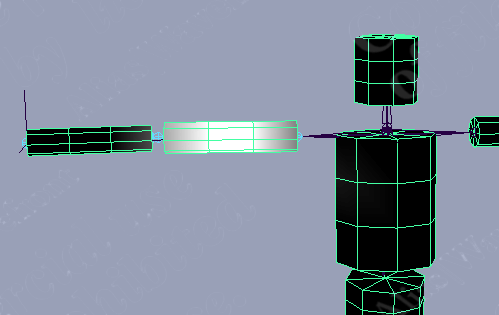
FIG 18. Shared skin weights near the elbow joint |
The character looks a bit like it's been assembled from tin cans, so he's now officially dubbed "TinCanMan." But tin cans are rigid, so the shared influences at joints cause flex in the skin "cylinders" that are unnatural for TinCanMan. This is remedied by painting the skin weights to different values.
65. In the PSWT, select R_armBone and enable Add, set Value = 1.0. Paint the "elbow" end of the upper arm section of SkinMesh, being sure the brush passes over the vertices. The skin will turn white where the painted weight is applied. Paint all sides of the elbow end of the upper arm cylinder.
66. Select Scale, set Value = 0. Paint the elbow section of the right forearm segment of the mesh – it will turn from pale grey to flat black. All influence from R_armBone has been removed from this portion of the mesh (FIG 19).
![[MCMT-19-PaintSkinWeights]](images/mcmt-19-paintskinweights.gif) FIG. 19 Painting the elbow joint skin weights |
Now select R_4armBone in the Transforms list and note the changes to its influence. The auto-normalization insures that the influence removed from R_armBone is added to R_4armBone. Now flex the joint and note that the end of the cylinders near the joint are no longer deformed – the "tin cans" now look rigid. Reactivate the PSWT (which was disabled when the Move tool was chosen).
Select L_armBone in the PSWT list. Note that its influences match the initial values for its counterpart on the right. This part of the mesh does not need to be painted to match – there's a menu item for that.
67. Use Skin>Edit Smooth Skin>Mirror Skin Weights>OPTIONS, and in the dialog enable Mirror Axis YZ, leave Direction unchecked (or uncheck it). Click Mirror. The display of skin weights on the model doesn't update immediately, so select L_armBone again in the PSWT. The skin weight influences from R_armBone have been mirrored across the YZ plane to L_armBone.
68. Use the PSWT techniques to modify the influences on the rest of the right side of the IK rig, so TinCanMan's parts don't deform "out of character."
For the torso segment of TinCanMan, Spine02 should have full influence. For the hips segment, Spine01 should have full influence.
Mirror the changes to the left side, and the skin weight painting is done.
The PSWT is invaluable for tweaking the joints of "real" characters, because the default weighting at joints usually leads to some unnatural deformation. Using the PSWT judiciously can greatly increase the realism of characters, particularly those with a single continuous skin mesh.
BTW, the UT2K3 models use segmented body parts extensively– they are, to a certain degree, just much more sophisticated "TinCanCreatures."
Practice using the IK handles to manipulate TinCanMan, using Skin>Go to Bind Pose to "reset" his position.
Time to create some Animation for TinCanMan.
Discussion
Animus: is it not easyer to use the mirror joint tool? image 5 is confusing it says RootBone, Spine01 and Pelvis that means the middle one is the spine? at 27 the tut says connect a new joint start at spine01 ? also at 23 it says nothing about ranaming the joint for the foot.
SuperApe: Q#1: It may indeed be easier to use the mirror joint tool; this may just be a matter of preference on the part of the author to show the low-level steps involved. Q#2: Yes. Q#3: Yes. Q#4: There is no foot. These are minor complaints when weighed against scope and quality of the whole tutorial. Unless there was a major problem (and I haven't found one in this tut), I wouldn't worry about it.
Animus: yes your totaly right this tutorial is very good i just wanted to make it clear.
Dr. Freemanstein: I am experiencing big problems at step 49. I have Maya 7.0 PLE which does not share the same options as the example dialogue box. In 7.0, the "Bind To" drop down only has "Joint Heirarchy", "Selected Joints" and "Object Heirarchy". Also the "Bind Method" menu only has "Closest in Heirarchy" and "Closest Distance". I have tried all possible combinations, but to no avail. Moving the IK handles only moves the bones while the skin remains stationary! Anyone figured this one out??
SuperApe: My educated guess is that Bind "Joint Heirarchy" is the same as "Complete Skeleton" and that "Object Heirarchy" is a new option. Also, I can guess that Bind Options "Closest in Heirarchy" is the same as "Closest Joint" and that the syntax here changed to acomodate the new "Object Heirarchy" option. As to why your Bind operation is not working, I would make sure you are shift-selecting your Mesh and Root joint in that order and that you see the Mesh color change once the Bind operation is complete.